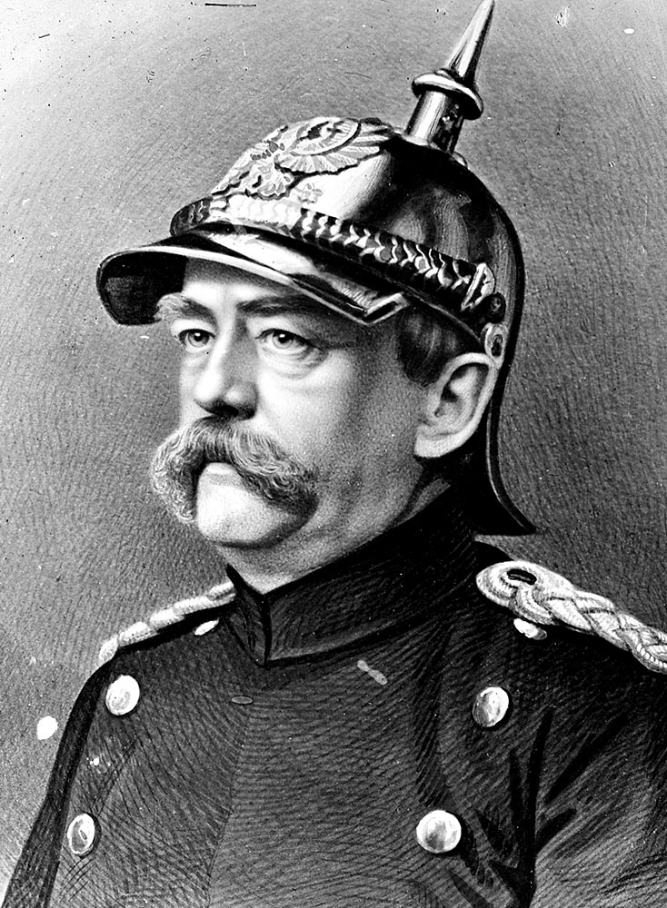

Otto was born into poverty in Tennessee around April of 2014. He was orphaned in his first weeks of life and ferried up to Chicago to the Anti-Cruelty society, with no family or home. On July 2, 2014, his future parents strolled into the Anti-Cruelty society just to take a look, having promised themselves not to adopt a dog. But Otto's charm, giant paws, and big floppy ears won them over. Since then, Otto has graduated from puppy school, and continues to learn tricks but refuses to perform then unless there is food in sight. He has grown from a starving 8lb pup with ribs showing to a plump 65lb young adult. Learn more about Otto and his glorious life here!
What's in a name?

Otto, with his German Shepherd face, is named after the great Otto Von Bismarck. Bismarck was the first chancellor of Germany and a conservative Prussian statesman who unified the German States. He balanced the power amongst the fragile European nations at the time and was nicknamed the "Iron Chancellor." Otto, the dog, can be as stubborn as von Bismarck, but is still working on mastering the balance of powers at the dog park.
Learn More about Bismarck